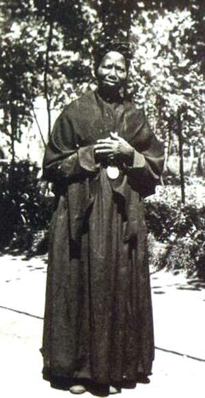
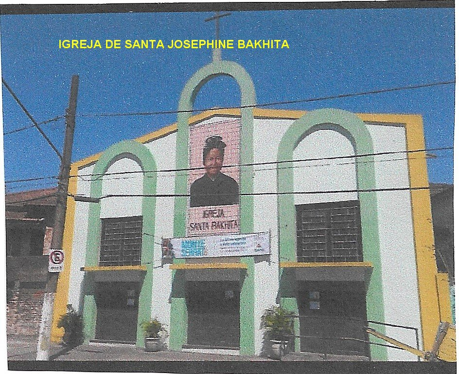
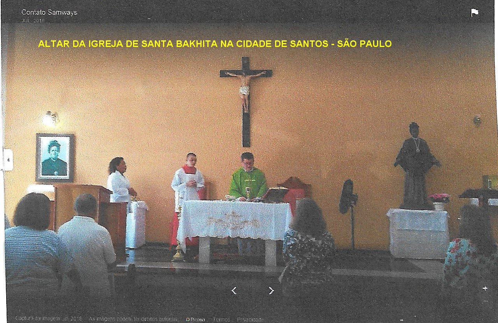

“AMOR DIVINO”

Antes de adoecer ela dizia:“Se eu ficasse de joelhos a vida inteira, nunca conseguiria agradecer o bastante, a minha imensa gratidão ao bom e querido DEUS”!
O Papa Bento XVI, em sua encíclica “Spe Salvi” (Salvo pela Esperança), utiliza a vida de Santa Josephine Bakhita para nos falar de esperança. Ela só tinha conhecido patrões que a desprezavam e maltratavam ou, na melhor das hipóteses, a consideravam uma escrava útil. Mas agora ela ouvia dizer que existe um “Paron”(Patrão), acima de todos os patrões, o SENHOR de todos os senhores, e que este SENHOR é bom, é a bondade em pessoa. Soube que este SENHOR também a conhecia, e a criou; mais ainda, e que a amava. Também ela era amada, e precisamente pelo “Paron Supremo” , diante do qual todos os outros patrões não passam de miseráveis servos. Ela era conhecida, amada e esperada.[…] e mais ainda, este Patrão tinha enfrentado pessoalmente o destino de ser flagelado e agora estava à espera dela à direita de DEUS PAI. Agora ela tinha «esperança»; já não aquela pequena esperança de achar patrões menos cruéis, mas a "grande esperança": eu sou definitivamente amada e aconteça o que acontecer, estou sendo esperada por este Amor. Assim a minha vida é boa”.
Por outro lado, através de Santa Josephine Bakhita, DEUS nos revela um grande segredo para a santidade, expressado no próprio corpo e refletido eternamente na alma. Verdadeiramente é uma via de submissão heróica a obediência à Vontade Divina:“A obediência agrada muito ao SENHOR. Sadios ou sofrendo, é preciso obedecer sempre, porque essa é a vontade do SENHOR”; isso se consegue mantendo a fé inabalável, pois “Com DEUS no coração tudo se suporta”.
“Também com o perdão sincero, escalamos a escada para nossa salvação”. Eram palavras de Bakhita:“Se encontrasse aqueles negreiros que me raptaram, e mesmo aqueles que me torturaram, ajoelhar-me-ia para beijar as suas mãos; porque, se isto não tivesse acontecido, eu não seria agora cristã e religiosa”.
A PRIMEIRA SANTA SUDANESA
O Decreto da “BEATIFICAÇÃO” de Josephine Bakhita foi promulgado e assinado em 17 de Maio de 1992, pelo Papa João Paulo II.
A “CANONIZAÇÃO” de Josephine Bakhita foi promulgada no dia 1º de Outubro de 2000, também foi assinado pelo Papa João Paulo II, no Vaticano, em Roma, havendo mais de 100.000 pessoas presentes. É “SANTA” porque escolheu viver assim: “acolhendo todos os acontecimentos da existência como um dom do Amor de DEUS”.
O MILAGRE OCORRIDO EM SANTOS
DEUS sabe como conduzir as almas e os acontecimentos do quotidiano, com os espaços e os momentos certos para realizar o SEU Plano de Amor e Salvação.
Muitos milagres têm sido alcançados de DEUS NOSSO SENHOR, pela preciosa intercessão de “Santa Bakhita”, ou mais oficialmente por “SANTA JOSEPHINE BAKHITA”, suplicando junto ao SENHOR DEUS DA VIDA, em favor da pessoa necessitada.
Histórico: A senhora Eva da Costa Onishi, residente na cidade de Santos, no Estado de São Paulo, sofria terrivelmente de diabetes, com profundas feridas nas pernas. O Centro Médico de Santos informou:“Ulcerações infectadas nos membros inferiores em paciente com insuficiência crônica da circulação venosa, obesidade e hipertensão arterial. O prognóstico é grave e prevê a amputação da perna direita, porque surgem os primeiros sinais de gangrena. Em ambas as pernas, as feridas são tão profundas que deixam aparecer o osso”.
Estando em sua residência, o milagre da cura aconteceu 24 horas depois que Eva rezou com muito fervor, apelando para Santa Bakhita interceder junto a DEUS, e conseguir DELE o beneficio da sua cura. A seguir, com muita convicção e bastante fé, esfregou um santinho com a imagem de Santa Josephine Bakhita sobre as diversas feridas nas duas pernas. No dia seguinte dia 27 de Maio de 1992, o milagre maravilhosamente aconteceu, e foi comprovado pelos médicos e também pelas autoridades religiosas católicas, em Santos. As duas pernas da senhora Eva não guardavam nem cicatrizes das terríveis e profundas feridas. A Diocese de Santos encaminhou toda a documentação para o Vaticano. Ficou comprovada a realidade do milagre, o qual foi utilizado para a Canonização de Josephine Bakhita.
A Festa em homenagem a Santa Josephine Bakhita, é celebrada anualmente no dia 8 de Fevereiro.
A IGREJA EM SANTOS
Foi construída na cidade de Santos, por iniciativa da Diocese local, uma Igreja em homenagem a Santa Josephine Bakhita, inaugurada no dia 4 de Fevereiro de 2006. O Bairro escolhido, é onde se encontra uma das Comunidades religiosas da Catedral. Na verdade é uma Igreja modesta e simples, bem de acordo com o povo residente no Bairro. Todavia, é uma Comunidade fiel e trabalhadora, sempre disposta a participar com muito fervor de todos os movimentos religiosos. Esta construção também faz parte do Projeto da Conferência Nacional dos Bispos do Brasil (CNBB):“Queremos ver JESUS (Caminho - Verdade - Vida)”.
FOTOGRAFIAS DA IGREJA

